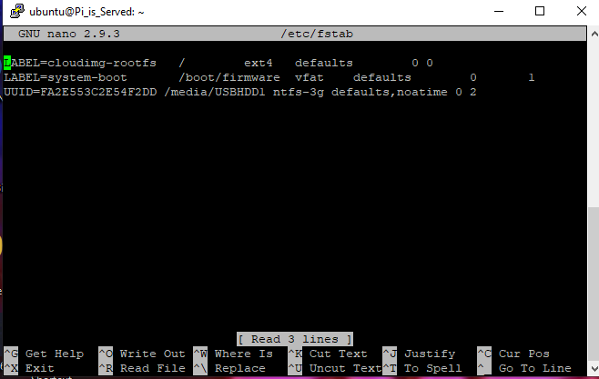
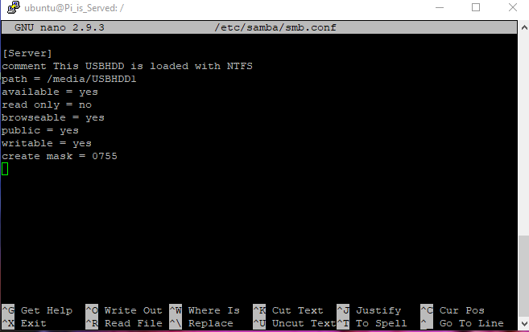

Instructions for:
Raspberry pi Samba Server
- Setup Raspberry Pi (OS: optional) More Info
- Required: Hard drive to store data
- Connect Raspberry pi to network
- Setup SSH [putty] to connect to Raspberry pi over network (optional)
- Connect to Raspberry pi
- Run
sudo apt-get update
First we will need to install a few things.
- Install drivers for hard drive and Samba by running
sudo apt-get install ntfs-3g samba
(ntfs-3g may differ based on what file system your hard drive has) More info about file systems below
More Info - Make Directory
sudo mkdir /media/Server
This is where all your files will load from (optional: Location/name /media/Server) - Next Find UUID of drive
sudo blkidHere you will look for the label of your drive, then copy and save
it's UUID (for more information on what a UUID is and what it looks like follow link) UUID - After that, edit fstab
sudo nano /etc/fstabIn the text editor type
UUID=#yourUUID /media/Server(or your name) ntfs-3g defaults,noatime 0 2It should look like this

Once this is done save it. - To make sure it was mounted run
sudo rebootlog back in, and check the directorycd /media/ServerEnterlsEnter.
Here you should see everything on your hard drive. - Next setup Samba!
sudo nano /etc/samba/smb.conf - scroll down to the bottom with down arrow key and add 
sudo reboot- Enjoy